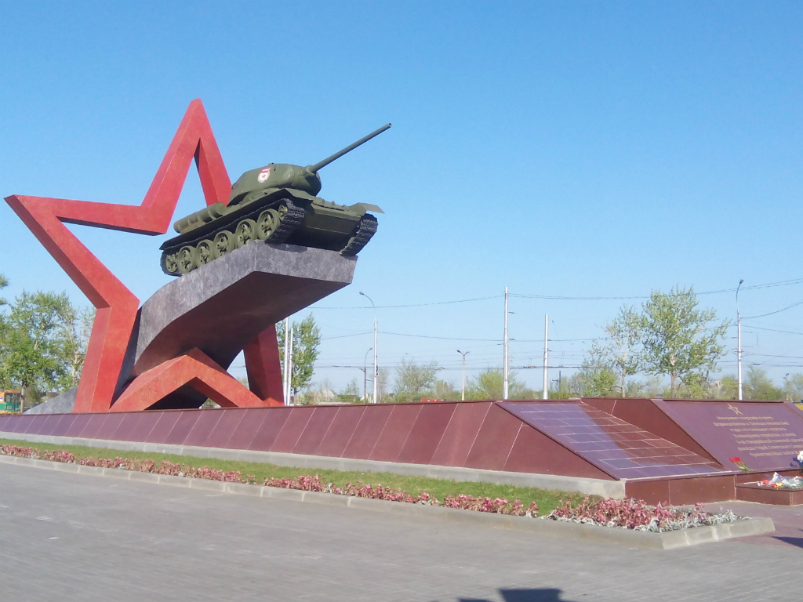

Места нашей области, посвящённые Великой Победе
 Домой
Домой
Площадь Танкистов
Площадь Танкистов - площадь в Липецке. На ней расположен монумент "Танк".
Монумент сооружен в честь формирования в Липецке весной 1942 года 1-го танкового корпуса под командованием генерал-майора М. Е. Катукова. В феврале 1943 года на базе корпуса была сформирована 1-я танковая армия, удостоенная в дальнейшем звания гвардейской. Монумент символизирует победоносный путь гвардейцев-танкистов от Липецка до Берлина. В начале 1970-х годов в липецкой средней школе № 40 была создана музейная экспозиция, посвященная катуковцам и формированию в Липецке 1-го гвардейского танкового корпуса. Директором школы тогда был С. П. Нестеров. Именно ему и увлечненным школьникам из клуба «Поиск» принадлежит идея создания памятника. Дети написали письмо маршалу бронетанковых войск А. Х. Бабаджаняну с просьбой выделить для школьного музея списанный танк времен Второй мировой войны. Маршал откликнулся на письмо, и вскоре в Липецк привезли легендарный Т-34. Торжественное открытие монумента состоялось 1 декабря 1978 года.
Изображения:
